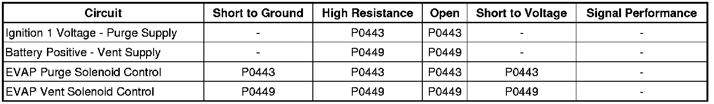

P0449
DTC P0443 or P0449
Diagnostic Instructions
* Perform the Diagnostic System Check - Vehicle (Initial Inspection and Diagnostic Overview) prior to using this diagnostic procedure.
* Review Strategy Based Diagnosis (Initial Inspection and Diagnostic Overview) for an overview of the diagnostic approach.
* Diagnostic Procedure Instructions (Initial Inspection and Diagnostic Overview)provides an overview of each diagnostic category.
DTC Descriptors
DTC P0443
- Evaporative Emission (EVAP) Purge Solenoid Control Circuit
DTC P0449
- Evaporative Emission (EVAP) Vent Solenoid Control Circuit
Diagnostic Fault Information

Circuit/System Description
An ignition voltage is supplied directly to the evaporative emission (EVAP) canister purge solenoid valve. The control module controls the EVAP canister purge solenoid valve ON by grounding the control circuit by means of an internal switch called a driver. The control module monitors the status of the driver. The EVAP canister purge solenoid valve is pulse width modulated (PWM). The scan tool displays the amount of ON time as a percentage.
Battery voltage is supplied to the EVAP canister vent solenoid valve. The control module grounds the EVAP canister vent solenoid valve control circuit to close the valve by means of an internal switch called a driver. The control module monitors the status of the driver. The scan tool displays the commanded state of the EVAP canister vent solenoid valve as ON or OFF.
Conditions for Running the DTC
* The ignition is ON.
* The system voltage is between 9-18 volts.
* DTCs P0443 and P0449 run continuously when the above conditions are met.
Conditions for Setting the DTC
The control module detects that the commanded state of the driver and the actual state of the control circuit do not match, for a minimum of 12 seconds.
Action Taken When the DTC Sets
DTCs P0443 and P0449 are Type B DTC.
Conditions for Clearing the MIL/DTC
DTCs P0443 and P0449 are Type B DTC.
Reference Information
Schematic Reference
Engine Controls Schematics (Electrical Diagrams)
Connector End View Reference
Component Connector End Views (Connector Views)
Electrical Information Reference
* Circuit Testing (Component Tests and General Diagnostics)
* Troubleshooting with a Test Lamp (Component Tests and General Diagnostics)
* Testing for Intermittent Conditions and Poor Connections (Component Tests and General Diagnostics)
* Wiring Repairs (Component Tests and General Diagnostics)
DTC Type Reference
Powertrain Diagnostic Trouble Code (DTC) Type Definitions (Diagnostic Trouble Code Descriptions)
Scan Tool Reference
Control Module References (Programming and Relearning)for scan tool information
Circuit/System Verification
P0443
1. With the ignition ON, engine OFF, you should hear a clicking sound when the EVAP canister purge solenoid valve is commanded to 50 percent with a scan tool. The clicking sound should stop when the EVAP canister purge solenoid valve is commanded to 0 percent. The rate at which the valve cycles should increase when the commanded state is increased, and decrease when the commanded state is decreased.
2. Operate the vehicle within the Conditions for Running the DTC. You may also operate the vehicle within the conditions that you observed from the Freeze Frame/Failure Records data.
P0449
1. With the ignition ON and the engine OFF, command the EVAP vent solenoid ON and OFF with a scan tool.
2. Listen for a click when the valve operates. Verify that both the ON, and the OFF states are commanded.
3. Operate the vehicle within the Conditions for Running the DTC. You may also operate the vehicle within the conditions that you observed from the Freeze Frame Records data.
Circuit/System Testing
1. Ignition OFF, disconnect the harness connector at the EVAP canister purge or vent solenoid valve.
2. Ignition ON, verify that a test lamp illuminates between the voltage supply circuit terminal A and ground.
• If a test lamp does not illuminate, test the voltage supply circuit for a short to ground or an open/high resistance. If the circuit tests normal and the voltage supply circuit fuse is open, test or replace the EVAP canister purge solenoid.
3. Connect a test lamp between the voltage supply circuit terminal A and the control circuit terminal B.
4. Energize the solenoid with a scan tool. Command the EVAP canister purge solenoid valve to 50 percent with a scan tool, or the EVAP canister vent solenoid valve ON and OFF. The test lamp should respond to the command.
• If the test lamp is always ON, test the control circuit for a short to ground. If the circuit tests normal, replace the control module.
• If the test lamp is always OFF, test the control circuit for a short to voltage or an open/high resistance. If the circuit tests normal, replace the control module.
5. If all circuits test normal, replace the appropriate solenoid valve.
Repair Instructions
Perform the Diagnostic Repair Verification (Verification Tests) after completing the diagnostic procedure.
* Evaporative Emission Canister Purge Solenoid Valve Replacement (Service and Repair)
* Evaporative Emission Canister Vent Solenoid Valve Replacement (Service and Repair)
* Control Module References (Programming and Relearning)for engine control module (ECM) replacement, setup, and programming